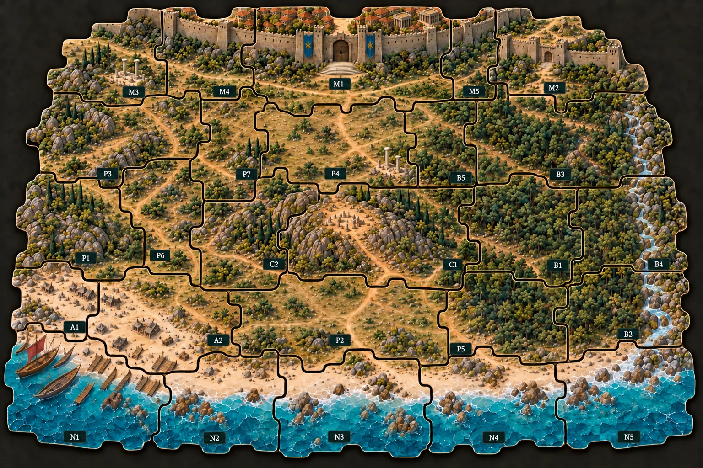

Esboço para conferir a ideia: as peças, a arte e as rotas são as de hoje. Círculos claros são as posições (uma miniatura cada). Linhas pontilhadas ligam posições vizinhas dentro da peça. As faixas laranja são as passagens entre peças, só onde existe rota hoje; a posição laranja é a porta que dá para ela. Onde não há faixa, as peças se encostam mas não se cruzam (por exemplo, C1 com C2, P4 e B5).
